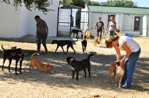
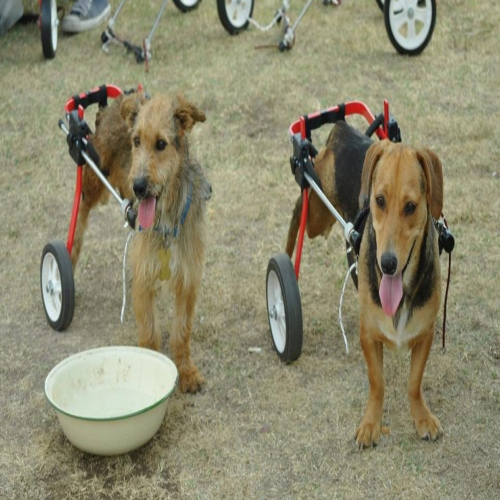
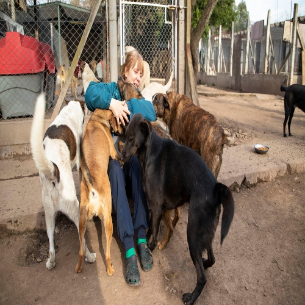
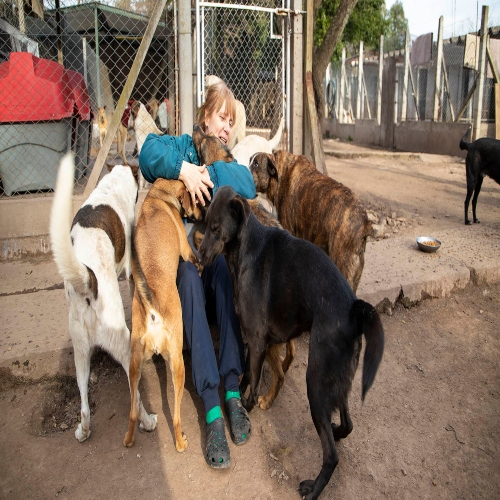

Sobre nosotros
Pichichos es una ONG, sin fines de lucro. Estamos inscriptos, como Asociación Civil, Pichichos personeria juridica n°451, Martín García 2200 B1801AGH Canning, Provincia de Buenos Aires, en Argentina. El refugio tiene una población que ronda los 750 perros. El trabajo de rescate y recuperación NO TIENE PRECEDENTES EN AMERICA LATINA. Por ser un REFUGIO NO EUTANÁSICO no considera inviable a ninguno de sus animales. Lo que lo hace ÚNICO EN EL MUNDO son sus 120 perros paraliticos, ellos no pueden caminar y usan carritos hechos a medida; además viven en el refugio 50 ciegos, y más de 250 viejitos, Muchos de ellos están en tratamiento por problemas renales, hepáticos, cardíacos, oncológicos o diabéticos.
Objetivo
El objetivo principal de la organización es la concientización de la sociedad. Las ideas que se difunden a través del accionar diario del refugio son las del respeto irrestricto por la vida y la de que el bienestar de los animales se puede lograr si la sociedad se involucra y los sentimientos de piedad se traducen en acciones concretas.

 
